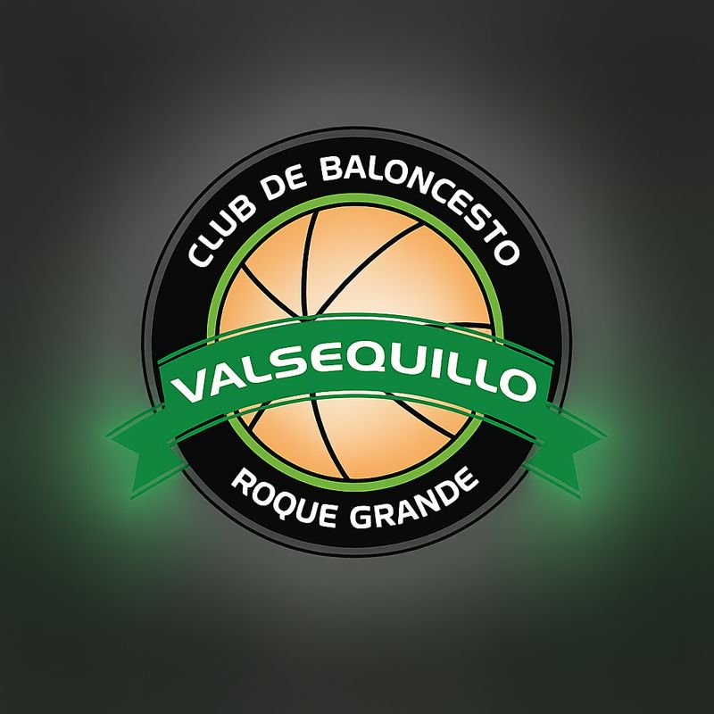

Los partidos del club ahora están en cbvalsequillo.com
Esta página ya no se actualiza. En la web nueva tienes los horarios y pabellones de cada semana y puedes añadir los partidos al calendario del móvil.
Ir a cbvalsequillo.com Te llevamos allí automáticamente en unos segundos.